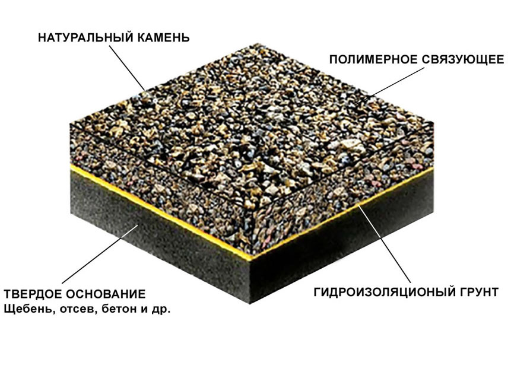
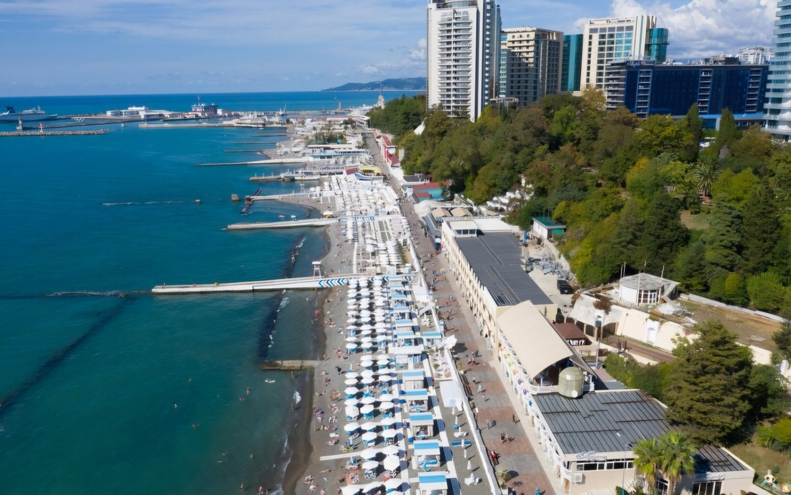
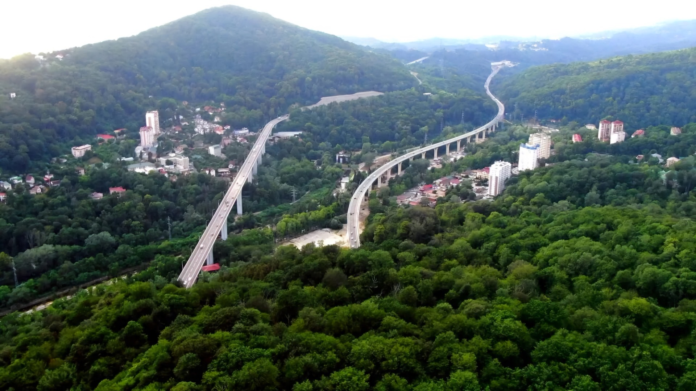
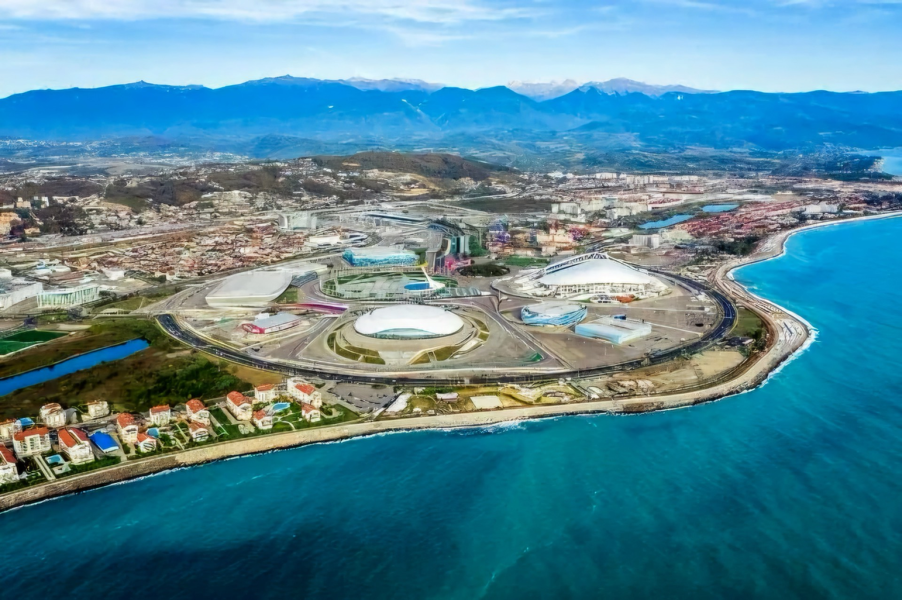
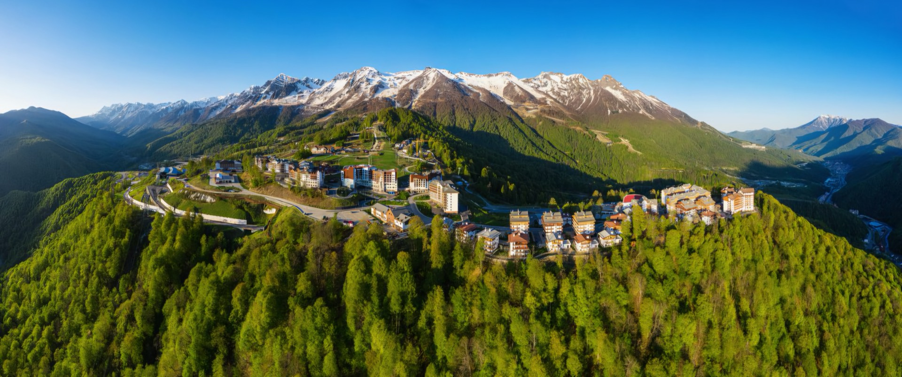

Фактор 1
Залповые ливни и пиковые сбросы
Перегрузка традиционных бетонных коллекторов и затопление прибрежных низменностей из-за высокой скорости формирования поверхностного стока на асфальтированных территориях.
ООО «АкваТерра Сочи» · Инженерно-экологические системы Черноморского побережья
ООО «АкваТерра Сочи» с 2016 года проектирует и внедряет комплексные инженерно-экологические решения для защиты урбанизированных территорий Большого Сочи. Компания специализируется на перехвате залповых ливневых потоков, стабилизации оползневых горных склонов, монтаже водопроницаемых минеральных покрытий и создании замкнутых циклов водооборота для субтропических парковых зон курорта.
В основе наших проектов лежит адаптация городской среды к экстремальным гидрометеорологическим нагрузкам: вместо принудительного сброса осадков в перегруженные коллекторы мы распределяем, очищаем и аккумулируем воду непосредственно в структуре ландшафта и дорожного основания.
Сочетание влажного субтропического климата, крутых горных склонов и глинистых грунтов создает уникальные риски: залповые тропические ливни (до 100 мм осадков за несколько часов), риск схода оползней, размытие набережных и при этом острый дефицит пресной воды в засушливые летние месяцы.
Перегрузка традиционных бетонных коллекторов и затопление прибрежных низменностей из-за высокой скорости формирования поверхностного стока на асфальтированных территориях.
Поверхностная эрозия почв, вымывание корневого слоя и потеря устойчивости насыпных грунтов на склонах с водоупорным основанием из сочинских аргиллитов.
Истощение пресных водоносных горизонтов в пик курортного сезона и тепловой стресс реликтовой субтропической растительности при отсутствии запасов технической воды.
Многоуровневая конструкция дренажного узла объединяет проницаемые покрытия, гравитационную фильтрацию в щебеночном пласте и подземное аккумулирование воды с автоматизированным контролем влажности.

Бесшовные пористые композиты из калиброванной черноморской гальки и УФ-стойких связующих смол. Мгновенно отводят воду сквозь полотно в дренажное основание.

Подземные модульные резервуары и биомеханические фильтры перехватывают ливневый сток, очищают его УФ-блоками и направляют в контур полива городских парков.

Погружные грунтовые зонды контролируют влажность и температуру в корневых горизонтах деревьев, включая капельное орошение строго по потребности почвы.

Каскадные ландшафтные биофильтры с влаголюбивой флорой удерживают склоны от размытия, а контуры адиабатического тумана снижают перегрев набережных.
Лицевой рабочий слой из натуральной окатанной черноморской гальки и эластичного полиуретанового связующего. Обладает открытой пористостью до 28% и мгновенно пропускает осадки в нижние горизонты, полностью исключая образование луж и поверхностного стока.

Четыре направления, которые «АкваТерра Сочи» развивает вместе с горожанами: от климатического комфорта в собственной квартире до городского сада по подписке.
Центр климатического комфорта: диагностика влажности, защита от протечек, автоматический полив и водоотведение для квартир, домов и дач.
Открыть лендингСервис заботы о домашних растениях: подбор растений под условия квартиры, уход и сопровождение тех, кто уезжает из города.
Открыть лендингСемейный экопарк: именное дерево с собственным участком и цифровым паспортом роста — семейная память и зеленый вклад в город.
Открыть лендингГородской сад по подписке: аренда грядки или мини-теплицы с умным поливом — свои овощи и зелень без собственной дачи.
Открыть лендингКонструктивные параметры дренажных систем адаптируются под высотную поясность, крутизну рельефа и гидрогеологические условия каждого района Большого Сочи.

Перехват штормовых нагонных волн, биофильтрация стока перед морской акваторией и контуры охлаждения пешеходных променадов.

Противооползневые биодренажные террасы на крутых склонах и автоматический мониторинг корневой влажности реликтовых парков.

Высокопроизводительные дренирующие площади и подземные накопители для компенсации близкого залегания грунтовых вод.

Армирование горных склонов морозостойкими георешетками и каскадные лотки для безопасного отвода весенних талых вод.
Отраслевая сессия и демонстрация генерального плана климатической устойчивости Большого Сочи. Вход для профильных специалистов, девелоперов и проектировщиков — по предварительной регистрации и именным электронным пропускам.
Заполните анкету для получения именного электронного пропуска
Ответы на ключевые технические и организационные вопросы о технологиях дренажа «АкваТерра» и условиях участия в сессии.